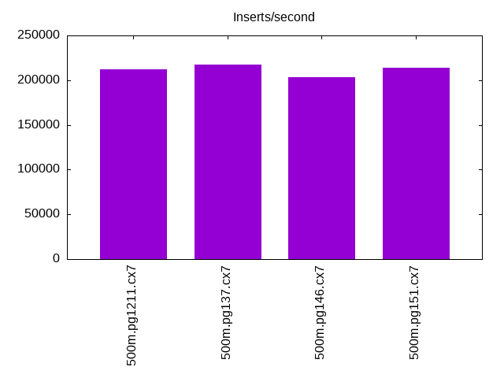
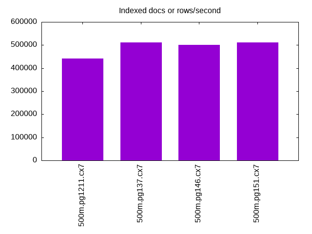
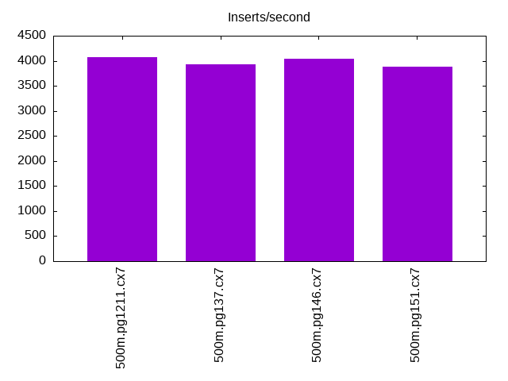
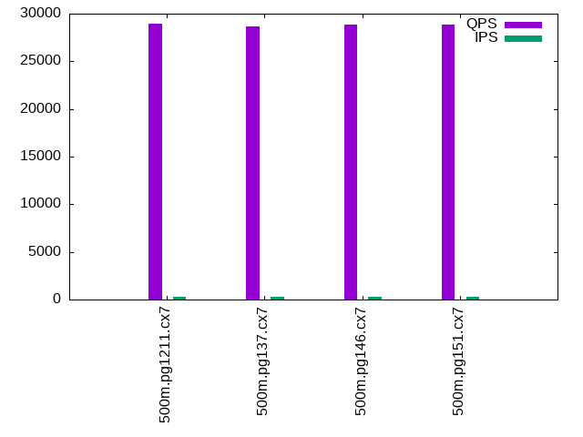
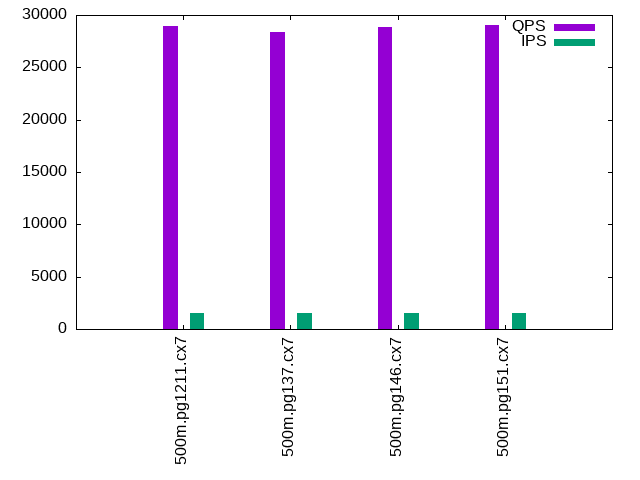
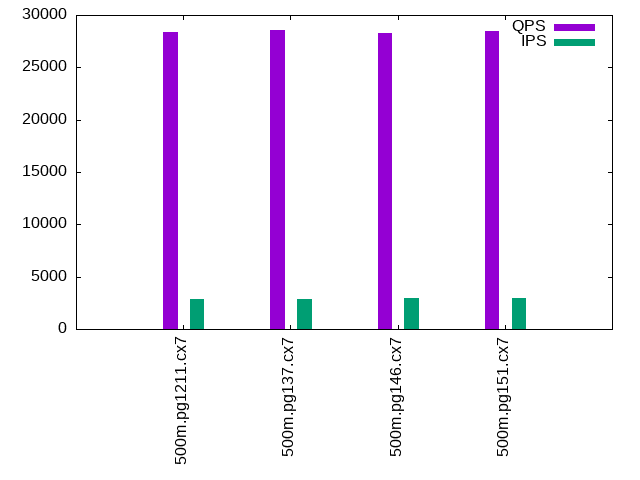

This is a report for the insert benchmark with 500M docs and 3 client(s). It is generated by scripts (bash, awk, sed) and Tufte might not be impressed. An overview of the insert benchmark is here and a short update is here. Below, by DBMS, I mean DBMS+version.config. An example is my8020.c10b40 where my means MySQL, 8020 is version 8.0.20 and c10b40 is the name for the configuration file.
The test server has 8 AMD cores, 16G RAM and an NVMe SSD. It is described here as the Beelink. The benchmark was run with 3 clients and there were 1 or 2 connections per client (1 for queries, 1 for inserts). The benchmark loads 500M rows without secondary indexes, creates secondary indexes, loads another 10M rows then does 3 read+write tests for one hour each that do queries as fast as possible with 100, 500 and then 1000 writes/second/client concurrent with the queries. The database doesn't fit in memory and parts of the benchmark are IO-bound. Clients and the DBMS share one server. The per-database configs are in the per-database subdirectories here.
The tested DBMS are:
The numbers are inserts/s for l.i0 and l.i1, indexed docs (or rows) /s for l.x and queries/s for q*.2. The values are the average rate over the entire test for inserts (IPS) and queries (QPS). The range of values for IPS and QPS is split into 3 parts: bottom 25%, middle 50%, top 25%. Values in the bottom 25% have a red background, values in the top 25% have a green background and values in the middle have no color. A gray background is used for values that can be ignored because the DBMS did not sustain the target insert rate. Red backgrounds are not used when the minimum value is within 80% of the max value.
| dbms | l.i0 | l.x | l.i1 | q100.1 | q500.1 | q1000.1 |
|---|---|---|---|---|---|---|
| 500m.pg1211.cx7 | 212404 | 442566 | 4075 | 28940 | 28913 | 28372 |
| 500m.pg137.cx7 | 217297 | 511873 | 3932 | 28642 | 28363 | 28612 |
| 500m.pg146.cx7 | 203252 | 501102 | 4045 | 28877 | 28808 | 28323 |
| 500m.pg151.cx7 | 213493 | 511873 | 3885 | 28833 | 29078 | 28484 |
This lists the average rate of inserts/s for the tests that do inserts concurrent with queries. For such tests the query rate is listed in the table above. The read+write tests are setup so that the insert rate should match the target rate every second. Cells that are not at least 95% of the target have a red background to indicate a failure to satisfy the target.
| dbms | q100.1 | q500.1 | q1000.1 |
|---|---|---|---|
| pg1211.cx7 | 299 | 1498 | 2894 |
| pg137.cx7 | 300 | 1498 | 2892 |
| pg146.cx7 | 300 | 1498 | 2937 |
| pg151.cx7 | 300 | 1498 | 2927 |
| target | 300 | 1500 | 3000 |
l.i0: load without secondary indexes. Graphs for performance per 1-second interval are here.
Average throughput:
Insert response time histogram: each cell has the percentage of responses that take <= the time in the header and max is the max response time in seconds. For the max column values in the top 25% of the range have a red background and in the bottom 25% of the range have a green background. The red background is not used when the min value is within 80% of the max value.
| dbms | 256us | 1ms | 4ms | 16ms | 64ms | 256ms | 1s | 4s | 16s | gt | max |
|---|---|---|---|---|---|---|---|---|---|---|---|
| pg1211.cx7 | 99.988 | 0.011 | nonzero | 0.001 | 0.189 | ||||||
| pg137.cx7 | 99.984 | 0.015 | 0.001 | 0.001 | 0.190 | ||||||
| pg146.cx7 | 99.983 | 0.016 | 0.001 | 0.001 | 0.118 | ||||||
| pg151.cx7 | 99.982 | 0.016 | 0.001 | 0.001 | nonzero | 0.900 |
Performance metrics for the DBMS listed above. Some are normalized by throughput, others are not. Legend for results is here.
ips qps rps rmbps wps wmbps rpq rkbpq wpi wkbpi csps cpups cspq cpupq dbgb1 dbgb2 rss maxop p50 p99 tag 212404 0 246 2.2 705.4 85.9 0.001 0.011 0.003 0.414 22950 62.3 0.108 23 47.8 64.6 0.0 0.189 71322 68723 500m.pg1211.cx7 217297 0 234 2.3 501.3 95.1 0.001 0.011 0.002 0.448 23492 62.6 0.108 23 47.8 68.1 5.5 0.190 72946 70024 500m.pg137.cx7 203252 0 209 1.8 480.8 89.9 0.001 0.009 0.002 0.453 21773 62.8 0.107 25 47.8 74.0 5.6 0.118 68426 65827 500m.pg146.cx7 213493 0 221 1.8 526.4 95.4 0.001 0.009 0.002 0.457 22550 63.4 0.106 24 47.8 74.7 0.0 0.900 71722 67426 500m.pg151.cx7
l.x: create secondary indexes.
Average throughput:
Performance metrics for the DBMS listed above. Some are normalized by throughput, others are not. Legend for results is here.
ips qps rps rmbps wps wmbps rpq rkbpq wpi wkbpi csps cpups cspq cpupq dbgb1 dbgb2 rss maxop p50 p99 tag 442566 0 1033 119.3 1557.0 189.8 0.002 0.276 0.004 0.439 2077 29.2 0.005 5 91.9 127.1 0.0 0.007 NA NA 500m.pg1211.cx7 511873 0 1080 133.7 632.8 141.9 0.002 0.268 0.001 0.284 1704 30.9 0.003 5 91.9 112.2 0.0 0.004 NA NA 500m.pg137.cx7 501102 0 1057 131.1 610.0 138.3 0.002 0.268 0.001 0.283 1660 29.9 0.003 5 91.9 118.0 0.0 0.005 NA NA 500m.pg146.cx7 511873 0 1083 133.8 604.6 137.5 0.002 0.268 0.001 0.275 1785 29.6 0.003 5 91.9 119.1 0.0 0.004 NA NA 500m.pg151.cx7
l.i1: continue load after secondary indexes created. Graphs for performance per 1-second interval are here.
Average throughput:
Insert response time histogram: each cell has the percentage of responses that take <= the time in the header and max is the max response time in seconds. For the max column values in the top 25% of the range have a red background and in the bottom 25% of the range have a green background. The red background is not used when the min value is within 80% of the max value.
| dbms | 256us | 1ms | 4ms | 16ms | 64ms | 256ms | 1s | 4s | 16s | gt | max |
|---|---|---|---|---|---|---|---|---|---|---|---|
| pg1211.cx7 | 26.473 | 61.073 | 12.038 | 0.414 | 0.001 | 1.329 | |||||
| pg137.cx7 | 25.783 | 60.915 | 12.824 | 0.474 | 0.002 | 1.136 | |||||
| pg146.cx7 | 27.061 | 59.512 | 13.245 | 0.181 | 0.935 | ||||||
| pg151.cx7 | 24.283 | 60.645 | 14.862 | 0.209 | 0.902 |
Performance metrics for the DBMS listed above. Some are normalized by throughput, others are not. Legend for results is here.
ips qps rps rmbps wps wmbps rpq rkbpq wpi wkbpi csps cpups cspq cpupq dbgb1 dbgb2 rss maxop p50 p99 tag 4075 0 6118 48.9 6670.6 106.1 1.501 12.292 1.637 26.668 14611 9.1 3.586 179 95.1 128.0 0.0 1.329 1398 200 500m.pg1211.cx7 3932 0 5979 47.8 6573.2 108.8 1.520 12.444 1.672 28.340 14450 9.0 3.675 183 95.1 122.3 0.0 1.136 1299 150 500m.pg137.cx7 4045 0 6089 48.7 6593.2 107.6 1.505 12.323 1.630 27.232 14724 9.1 3.640 180 95.1 129.8 0.0 0.935 1448 400 500m.pg146.cx7 3885 0 5827 46.6 6424.7 104.1 1.500 12.284 1.654 27.426 14147 8.6 3.641 177 95.1 129.5 0.0 0.902 1348 350 500m.pg151.cx7
q100.1: range queries with 100 insert/s per client. Graphs for performance per 1-second interval are here.
Average throughput:
Query response time histogram: each cell has the percentage of responses that take <= the time in the header and max is the max response time in seconds. For max values in the top 25% of the range have a red background and in the bottom 25% of the range have a green background. The red background is not used when the min value is within 80% of the max value.
| dbms | 256us | 1ms | 4ms | 16ms | 64ms | 256ms | 1s | 4s | 16s | gt | max |
|---|---|---|---|---|---|---|---|---|---|---|---|
| pg1211.cx7 | 99.737 | 0.258 | 0.004 | 0.001 | nonzero | 0.040 | |||||
| pg137.cx7 | 99.721 | 0.267 | 0.007 | 0.004 | 0.001 | nonzero | 0.105 | ||||
| pg146.cx7 | 99.704 | 0.281 | 0.010 | 0.005 | nonzero | nonzero | 0.073 | ||||
| pg151.cx7 | 99.712 | 0.272 | 0.009 | 0.006 | 0.001 | nonzero | 0.102 |
Insert response time histogram: each cell has the percentage of responses that take <= the time in the header and max is the max response time in seconds. For max values in the top 25% of the range have a red background and in the bottom 25% of the range have a green background. The red background is not used when the min value is within 80% of the max value.
| dbms | 256us | 1ms | 4ms | 16ms | 64ms | 256ms | 1s | 4s | 16s | gt | max |
|---|---|---|---|---|---|---|---|---|---|---|---|
| pg1211.cx7 | 59.681 | 39.602 | 0.718 | 0.106 | |||||||
| pg137.cx7 | 81.704 | 17.889 | 0.380 | 0.028 | 0.837 | ||||||
| pg146.cx7 | 75.356 | 24.125 | 0.519 | 0.147 | |||||||
| pg151.cx7 | 77.764 | 21.486 | 0.736 | 0.014 | 0.396 |
Performance metrics for the DBMS listed above. Some are normalized by throughput, others are not. Legend for results is here.
ips qps rps rmbps wps wmbps rpq rkbpq wpi wkbpi csps cpups cspq cpupq dbgb1 dbgb2 rss maxop p50 p99 tag 299 28940 496 3.9 770.1 11.7 0.017 0.139 2.572 40.072 112086 38.9 3.873 108 95.2 113.4 0.0 0.040 10117 6425 500m.pg1211.cx7 300 28642 508 4.0 911.2 12.8 0.018 0.144 3.043 43.901 110948 38.6 3.874 108 95.2 105.2 0.0 0.105 10149 4443 500m.pg137.cx7 300 28877 508 4.0 927.1 13.1 0.018 0.143 3.095 44.633 111765 38.2 3.870 106 95.2 112.9 0.0 0.073 10325 4235 500m.pg146.cx7 300 28833 508 4.0 933.2 13.0 0.018 0.144 3.116 44.414 111530 38.1 3.868 106 95.2 113.3 0.0 0.102 10388 4093 500m.pg151.cx7
q500.1: range queries with 500 insert/s per client. Graphs for performance per 1-second interval are here.
Average throughput:
Query response time histogram: each cell has the percentage of responses that take <= the time in the header and max is the max response time in seconds. For max values in the top 25% of the range have a red background and in the bottom 25% of the range have a green background. The red background is not used when the min value is within 80% of the max value.
| dbms | 256us | 1ms | 4ms | 16ms | 64ms | 256ms | 1s | 4s | 16s | gt | max |
|---|---|---|---|---|---|---|---|---|---|---|---|
| pg1211.cx7 | 99.833 | 0.155 | 0.011 | 0.001 | nonzero | 0.050 | |||||
| pg137.cx7 | 99.823 | 0.165 | 0.011 | 0.001 | nonzero | nonzero | 0.098 | ||||
| pg146.cx7 | 99.792 | 0.196 | 0.011 | 0.001 | nonzero | 0.063 | |||||
| pg151.cx7 | 99.809 | 0.179 | 0.011 | 0.001 | nonzero | 0.060 |
Insert response time histogram: each cell has the percentage of responses that take <= the time in the header and max is the max response time in seconds. For max values in the top 25% of the range have a red background and in the bottom 25% of the range have a green background. The red background is not used when the min value is within 80% of the max value.
| dbms | 256us | 1ms | 4ms | 16ms | 64ms | 256ms | 1s | 4s | 16s | gt | max |
|---|---|---|---|---|---|---|---|---|---|---|---|
| pg1211.cx7 | 36.779 | 56.373 | 6.840 | 0.008 | 0.377 | ||||||
| pg137.cx7 | 43.200 | 52.026 | 4.744 | 0.030 | 0.460 | ||||||
| pg146.cx7 | 38.659 | 54.424 | 6.916 | 0.001 | 0.256 | ||||||
| pg151.cx7 | 43.419 | 51.202 | 5.366 | 0.013 | 0.370 |
Performance metrics for the DBMS listed above. Some are normalized by throughput, others are not. Legend for results is here.
ips qps rps rmbps wps wmbps rpq rkbpq wpi wkbpi csps cpups cspq cpupq dbgb1 dbgb2 rss maxop p50 p99 tag 1498 28913 2094 16.6 3165.4 49.1 0.072 0.587 2.114 33.548 115121 40.9 3.982 113 95.8 108.0 0.0 0.050 9941 7963 500m.pg1211.cx7 1498 28363 2106 16.7 3189.8 49.4 0.074 0.603 2.130 33.810 113030 40.9 3.985 115 95.8 106.6 0.0 0.098 9861 7820 500m.pg137.cx7 1498 28808 2107 16.7 3119.8 48.2 0.073 0.593 2.083 32.934 114650 40.6 3.980 113 95.8 109.0 0.0 0.063 9957 7851 500m.pg146.cx7 1498 29078 2121 16.8 3104.2 48.1 0.073 0.592 2.072 32.872 115537 40.6 3.973 112 95.8 109.0 0.0 0.060 10053 7847 500m.pg151.cx7
q1000.1: range queries with 1000 insert/s per client. Graphs for performance per 1-second interval are here.
Average throughput:
Query response time histogram: each cell has the percentage of responses that take <= the time in the header and max is the max response time in seconds. For max values in the top 25% of the range have a red background and in the bottom 25% of the range have a green background. The red background is not used when the min value is within 80% of the max value.
| dbms | 256us | 1ms | 4ms | 16ms | 64ms | 256ms | 1s | 4s | 16s | gt | max |
|---|---|---|---|---|---|---|---|---|---|---|---|
| pg1211.cx7 | 99.684 | 0.292 | 0.020 | 0.003 | 0.001 | nonzero | 0.144 | ||||
| pg137.cx7 | 99.701 | 0.277 | 0.020 | 0.003 | 0.001 | nonzero | 0.126 | ||||
| pg146.cx7 | 99.648 | 0.329 | 0.020 | 0.003 | nonzero | nonzero | 0.136 | ||||
| pg151.cx7 | 99.637 | 0.339 | 0.021 | 0.003 | 0.001 | nonzero | 0.149 |
Insert response time histogram: each cell has the percentage of responses that take <= the time in the header and max is the max response time in seconds. For max values in the top 25% of the range have a red background and in the bottom 25% of the range have a green background. The red background is not used when the min value is within 80% of the max value.
| dbms | 256us | 1ms | 4ms | 16ms | 64ms | 256ms | 1s | 4s | 16s | gt | max |
|---|---|---|---|---|---|---|---|---|---|---|---|
| pg1211.cx7 | 47.705 | 43.824 | 8.407 | 0.064 | 0.441 | ||||||
| pg137.cx7 | 52.271 | 39.694 | 7.948 | 0.086 | 0.605 | ||||||
| pg146.cx7 | 56.860 | 36.117 | 6.999 | 0.025 | 0.381 | ||||||
| pg151.cx7 | 51.878 | 39.858 | 8.229 | 0.035 | 0.338 |
Performance metrics for the DBMS listed above. Some are normalized by throughput, others are not. Legend for results is here.
ips qps rps rmbps wps wmbps rpq rkbpq wpi wkbpi csps cpups cspq cpupq dbgb1 dbgb2 rss maxop p50 p99 tag 2894 28372 4076 32.4 5814.9 88.1 0.144 1.168 2.009 31.179 117364 42.9 4.137 121 96.8 115.7 0.0 0.144 9402 8092 500m.pg1211.cx7 2892 28612 4086 32.4 5852.2 88.4 0.143 1.161 2.024 31.313 118261 42.9 4.133 120 96.8 115.6 0.0 0.126 9541 8279 500m.pg137.cx7 2937 28323 4150 32.9 5811.9 88.6 0.147 1.191 1.979 30.903 117131 42.9 4.136 121 96.8 119.7 0.0 0.136 9397 8055 500m.pg146.cx7 2927 28484 4144 32.9 5824.1 88.2 0.145 1.182 1.990 30.867 117617 42.9 4.129 120 96.8 119.7 0.0 0.149 9484 8151 500m.pg151.cx7
l.i0: load without secondary indexes
Performance metrics for all DBMS, not just the ones listed above. Some are normalized by throughput, others are not. Legend for results is here.
ips qps rps rmbps wps wmbps rpq rkbpq wpi wkbpi csps cpups cspq cpupq dbgb1 dbgb2 rss maxop p50 p99 tag 212404 0 246 2.2 705.4 85.9 0.001 0.011 0.003 0.414 22950 62.3 0.108 23 47.8 64.6 0.0 0.189 71322 68723 500m.pg1211.cx7 217297 0 234 2.3 501.3 95.1 0.001 0.011 0.002 0.448 23492 62.6 0.108 23 47.8 68.1 5.5 0.190 72946 70024 500m.pg137.cx7 203252 0 209 1.8 480.8 89.9 0.001 0.009 0.002 0.453 21773 62.8 0.107 25 47.8 74.0 5.6 0.118 68426 65827 500m.pg146.cx7 213493 0 221 1.8 526.4 95.4 0.001 0.009 0.002 0.457 22550 63.4 0.106 24 47.8 74.7 0.0 0.900 71722 67426 500m.pg151.cx7
l.x: create secondary indexes
Performance metrics for all DBMS, not just the ones listed above. Some are normalized by throughput, others are not. Legend for results is here.
ips qps rps rmbps wps wmbps rpq rkbpq wpi wkbpi csps cpups cspq cpupq dbgb1 dbgb2 rss maxop p50 p99 tag 442566 0 1033 119.3 1557.0 189.8 0.002 0.276 0.004 0.439 2077 29.2 0.005 5 91.9 127.1 0.0 0.007 NA NA 500m.pg1211.cx7 511873 0 1080 133.7 632.8 141.9 0.002 0.268 0.001 0.284 1704 30.9 0.003 5 91.9 112.2 0.0 0.004 NA NA 500m.pg137.cx7 501102 0 1057 131.1 610.0 138.3 0.002 0.268 0.001 0.283 1660 29.9 0.003 5 91.9 118.0 0.0 0.005 NA NA 500m.pg146.cx7 511873 0 1083 133.8 604.6 137.5 0.002 0.268 0.001 0.275 1785 29.6 0.003 5 91.9 119.1 0.0 0.004 NA NA 500m.pg151.cx7
l.i1: continue load after secondary indexes created
Performance metrics for all DBMS, not just the ones listed above. Some are normalized by throughput, others are not. Legend for results is here.
ips qps rps rmbps wps wmbps rpq rkbpq wpi wkbpi csps cpups cspq cpupq dbgb1 dbgb2 rss maxop p50 p99 tag 4075 0 6118 48.9 6670.6 106.1 1.501 12.292 1.637 26.668 14611 9.1 3.586 179 95.1 128.0 0.0 1.329 1398 200 500m.pg1211.cx7 3932 0 5979 47.8 6573.2 108.8 1.520 12.444 1.672 28.340 14450 9.0 3.675 183 95.1 122.3 0.0 1.136 1299 150 500m.pg137.cx7 4045 0 6089 48.7 6593.2 107.6 1.505 12.323 1.630 27.232 14724 9.1 3.640 180 95.1 129.8 0.0 0.935 1448 400 500m.pg146.cx7 3885 0 5827 46.6 6424.7 104.1 1.500 12.284 1.654 27.426 14147 8.6 3.641 177 95.1 129.5 0.0 0.902 1348 350 500m.pg151.cx7
q100.1: range queries with 100 insert/s per client
Performance metrics for all DBMS, not just the ones listed above. Some are normalized by throughput, others are not. Legend for results is here.
ips qps rps rmbps wps wmbps rpq rkbpq wpi wkbpi csps cpups cspq cpupq dbgb1 dbgb2 rss maxop p50 p99 tag 299 28940 496 3.9 770.1 11.7 0.017 0.139 2.572 40.072 112086 38.9 3.873 108 95.2 113.4 0.0 0.040 10117 6425 500m.pg1211.cx7 300 28642 508 4.0 911.2 12.8 0.018 0.144 3.043 43.901 110948 38.6 3.874 108 95.2 105.2 0.0 0.105 10149 4443 500m.pg137.cx7 300 28877 508 4.0 927.1 13.1 0.018 0.143 3.095 44.633 111765 38.2 3.870 106 95.2 112.9 0.0 0.073 10325 4235 500m.pg146.cx7 300 28833 508 4.0 933.2 13.0 0.018 0.144 3.116 44.414 111530 38.1 3.868 106 95.2 113.3 0.0 0.102 10388 4093 500m.pg151.cx7
q500.1: range queries with 500 insert/s per client
Performance metrics for all DBMS, not just the ones listed above. Some are normalized by throughput, others are not. Legend for results is here.
ips qps rps rmbps wps wmbps rpq rkbpq wpi wkbpi csps cpups cspq cpupq dbgb1 dbgb2 rss maxop p50 p99 tag 1498 28913 2094 16.6 3165.4 49.1 0.072 0.587 2.114 33.548 115121 40.9 3.982 113 95.8 108.0 0.0 0.050 9941 7963 500m.pg1211.cx7 1498 28363 2106 16.7 3189.8 49.4 0.074 0.603 2.130 33.810 113030 40.9 3.985 115 95.8 106.6 0.0 0.098 9861 7820 500m.pg137.cx7 1498 28808 2107 16.7 3119.8 48.2 0.073 0.593 2.083 32.934 114650 40.6 3.980 113 95.8 109.0 0.0 0.063 9957 7851 500m.pg146.cx7 1498 29078 2121 16.8 3104.2 48.1 0.073 0.592 2.072 32.872 115537 40.6 3.973 112 95.8 109.0 0.0 0.060 10053 7847 500m.pg151.cx7
q1000.1: range queries with 1000 insert/s per client
Performance metrics for all DBMS, not just the ones listed above. Some are normalized by throughput, others are not. Legend for results is here.
ips qps rps rmbps wps wmbps rpq rkbpq wpi wkbpi csps cpups cspq cpupq dbgb1 dbgb2 rss maxop p50 p99 tag 2894 28372 4076 32.4 5814.9 88.1 0.144 1.168 2.009 31.179 117364 42.9 4.137 121 96.8 115.7 0.0 0.144 9402 8092 500m.pg1211.cx7 2892 28612 4086 32.4 5852.2 88.4 0.143 1.161 2.024 31.313 118261 42.9 4.133 120 96.8 115.6 0.0 0.126 9541 8279 500m.pg137.cx7 2937 28323 4150 32.9 5811.9 88.6 0.147 1.191 1.979 30.903 117131 42.9 4.136 121 96.8 119.7 0.0 0.136 9397 8055 500m.pg146.cx7 2927 28484 4144 32.9 5824.1 88.2 0.145 1.182 1.990 30.867 117617 42.9 4.129 120 96.8 119.7 0.0 0.149 9484 8151 500m.pg151.cx7
Insert response time histogram
256us 1ms 4ms 16ms 64ms 256ms 1s 4s 16s gt max tag 0.000 0.000 99.988 0.011 nonzero 0.001 0.000 0.000 0.000 0.000 0.189 pg1211.cx7 0.000 0.000 99.984 0.015 0.001 0.001 0.000 0.000 0.000 0.000 0.190 pg137.cx7 0.000 0.000 99.983 0.016 0.001 0.001 0.000 0.000 0.000 0.000 0.118 pg146.cx7 0.000 0.000 99.982 0.016 0.001 0.001 nonzero 0.000 0.000 0.000 0.900 pg151.cx7
TODO - determine whether there is data for create index response time
Insert response time histogram
256us 1ms 4ms 16ms 64ms 256ms 1s 4s 16s gt max tag 0.000 0.000 0.000 26.473 61.073 12.038 0.414 0.001 0.000 0.000 1.329 pg1211.cx7 0.000 0.000 0.000 25.783 60.915 12.824 0.474 0.002 0.000 0.000 1.136 pg137.cx7 0.000 0.000 0.000 27.061 59.512 13.245 0.181 0.000 0.000 0.000 0.935 pg146.cx7 0.000 0.000 0.000 24.283 60.645 14.862 0.209 0.000 0.000 0.000 0.902 pg151.cx7
Query response time histogram
256us 1ms 4ms 16ms 64ms 256ms 1s 4s 16s gt max tag 99.737 0.258 0.004 0.001 nonzero 0.000 0.000 0.000 0.000 0.000 0.040 pg1211.cx7 99.721 0.267 0.007 0.004 0.001 nonzero 0.000 0.000 0.000 0.000 0.105 pg137.cx7 99.704 0.281 0.010 0.005 nonzero nonzero 0.000 0.000 0.000 0.000 0.073 pg146.cx7 99.712 0.272 0.009 0.006 0.001 nonzero 0.000 0.000 0.000 0.000 0.102 pg151.cx7
Insert response time histogram
256us 1ms 4ms 16ms 64ms 256ms 1s 4s 16s gt max tag 0.000 0.000 0.000 59.681 39.602 0.718 0.000 0.000 0.000 0.000 0.106 pg1211.cx7 0.000 0.000 0.000 81.704 17.889 0.380 0.028 0.000 0.000 0.000 0.837 pg137.cx7 0.000 0.000 0.000 75.356 24.125 0.519 0.000 0.000 0.000 0.000 0.147 pg146.cx7 0.000 0.000 0.000 77.764 21.486 0.736 0.014 0.000 0.000 0.000 0.396 pg151.cx7
Query response time histogram
256us 1ms 4ms 16ms 64ms 256ms 1s 4s 16s gt max tag 99.833 0.155 0.011 0.001 nonzero 0.000 0.000 0.000 0.000 0.000 0.050 pg1211.cx7 99.823 0.165 0.011 0.001 nonzero nonzero 0.000 0.000 0.000 0.000 0.098 pg137.cx7 99.792 0.196 0.011 0.001 nonzero 0.000 0.000 0.000 0.000 0.000 0.063 pg146.cx7 99.809 0.179 0.011 0.001 nonzero 0.000 0.000 0.000 0.000 0.000 0.060 pg151.cx7
Insert response time histogram
256us 1ms 4ms 16ms 64ms 256ms 1s 4s 16s gt max tag 0.000 0.000 0.000 36.779 56.373 6.840 0.008 0.000 0.000 0.000 0.377 pg1211.cx7 0.000 0.000 0.000 43.200 52.026 4.744 0.030 0.000 0.000 0.000 0.460 pg137.cx7 0.000 0.000 0.000 38.659 54.424 6.916 0.001 0.000 0.000 0.000 0.256 pg146.cx7 0.000 0.000 0.000 43.419 51.202 5.366 0.013 0.000 0.000 0.000 0.370 pg151.cx7
Query response time histogram
256us 1ms 4ms 16ms 64ms 256ms 1s 4s 16s gt max tag 99.684 0.292 0.020 0.003 0.001 nonzero 0.000 0.000 0.000 0.000 0.144 pg1211.cx7 99.701 0.277 0.020 0.003 0.001 nonzero 0.000 0.000 0.000 0.000 0.126 pg137.cx7 99.648 0.329 0.020 0.003 nonzero nonzero 0.000 0.000 0.000 0.000 0.136 pg146.cx7 99.637 0.339 0.021 0.003 0.001 nonzero 0.000 0.000 0.000 0.000 0.149 pg151.cx7
Insert response time histogram
256us 1ms 4ms 16ms 64ms 256ms 1s 4s 16s gt max tag 0.000 0.000 0.000 47.705 43.824 8.407 0.064 0.000 0.000 0.000 0.441 pg1211.cx7 0.000 0.000 0.000 52.271 39.694 7.948 0.086 0.000 0.000 0.000 0.605 pg137.cx7 0.000 0.000 0.000 56.860 36.117 6.999 0.025 0.000 0.000 0.000 0.381 pg146.cx7 0.000 0.000 0.000 51.878 39.858 8.229 0.035 0.000 0.000 0.000 0.338 pg151.cx7